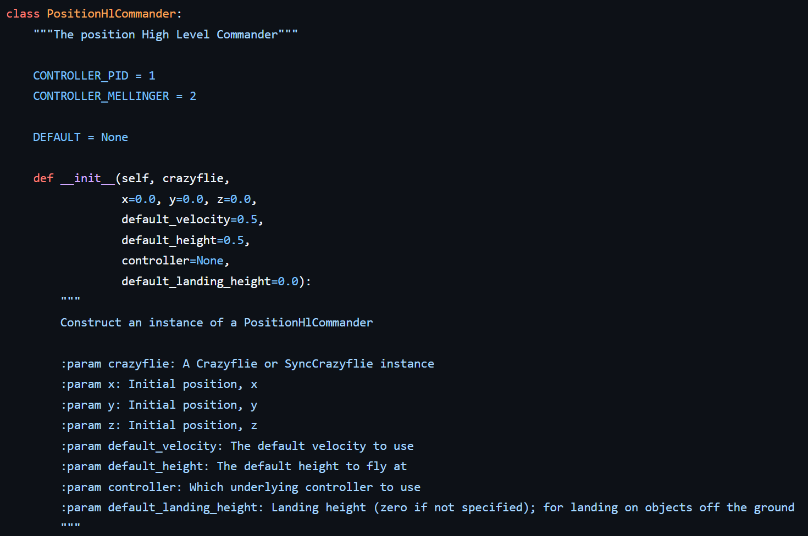
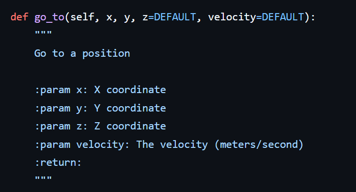
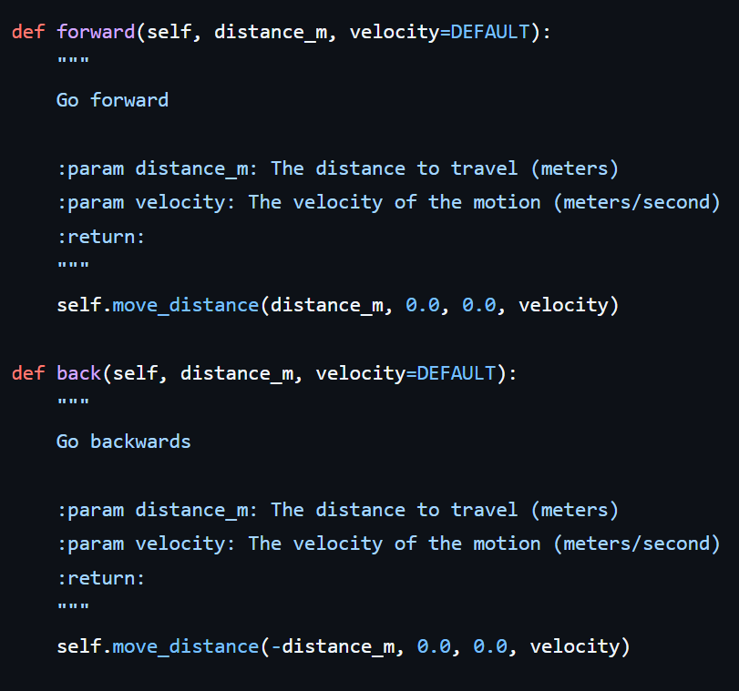
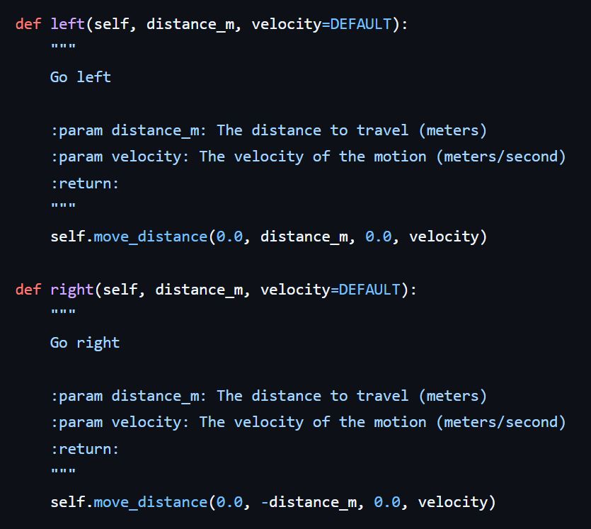
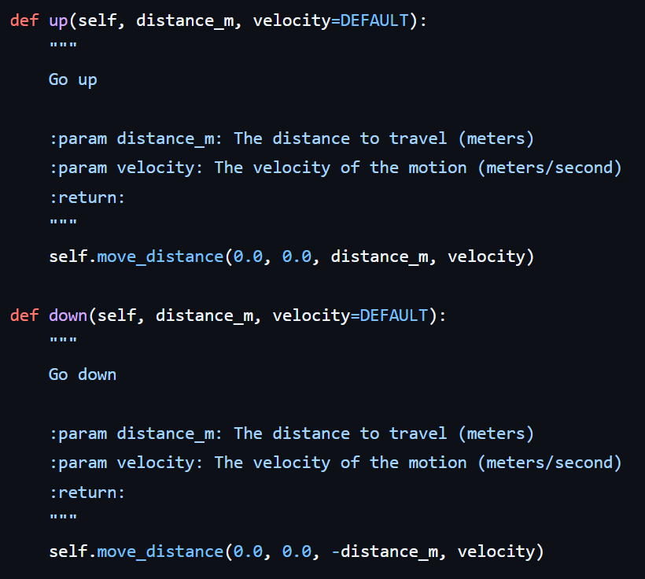
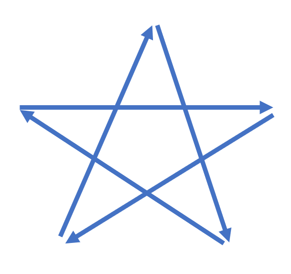
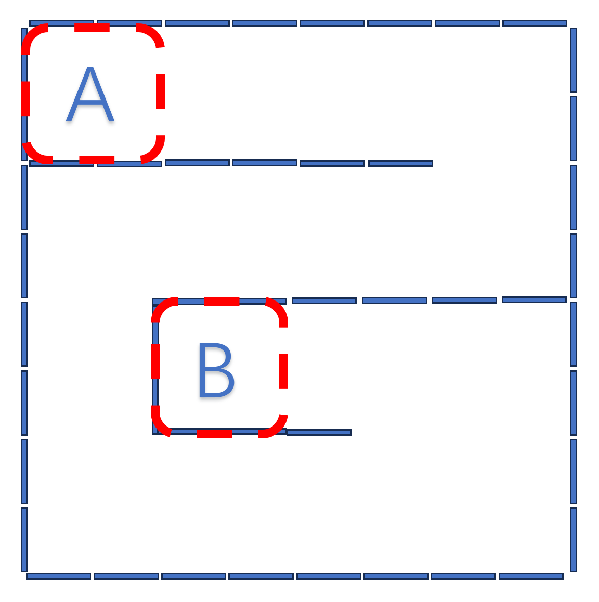

实验 12: 位置控制接口实验
PositionCommander
一、实验目标
本节课旨在让同学们掌握 PositionHlCommander 类的核心用法，实现无人机的精准路径规划。
- 理解空间坐标系概念
理解无人机飞行中的**世界坐标系（绝对坐标）与机体坐标系（相对坐标）**的区别。
掌握 Crazyflie 结合 Flow deck v2 上电启动时的原点 (0,0,0) 设定逻辑。
- 掌握 PositionHlCommander 类的基本用法
学会使用 take_off() 和 land() 实现自动起降，理解默认参数（高度、速度）的作用。
核心技能：掌握 go_to(x, y, z) 指令，实现让无人机飞往空间中特定的绝对坐标点。
进阶技能：掌握 forward(), back(), left(), right() 等相对位置控制指令，理解其与绝对坐标控制的混合使用。
- 编写组合飞行例程
能够综合运用上述指令，编写 Python 脚本驱动无人机完成指定的几何图形（如正方形、长方形或立体台阶轨迹）飞行。
二、实验准备
之前已经配置好连接到无人机的客户端的虚拟机系统。并且需要具备前几门实验已经积累的linux系统操作经验。再需要一点的python编程基础。
本实验中需要用到的硬件设备：
- Crazyflie 2.0
- Crazyradio PA
- Flow deck
- Multiranger deck
三、实验步骤
本次实验将主要进行python脚本的运行，编程库参考资料可直接打开 Bitcraze cflib User Guides：
https://www.bitcraze.io/documentation/repository/crazyflie-lib-python/master/user-guides/若在进行实验中遇到困难，可直接打开上述网址进一步参考。同时部分操作和知识要点也在上节课的实验手册中有提及，如有不会的地方可以再参考上节的实验手册，这部分操作这节实验手册不再赘述。
首先认识一下PositionHlCommander 类的成员函数及用法：
本次课程附带的position_hl_commander.py文件中可以查看该类的源码，作为参考。
在编写飞行代码之前，我们需要先“认识”一下我们的指挥官——PositionHlCommander。这个类封装了一系列指令，让我们能够像指挥交通一样告诉无人机去哪里。
以下是我们在本节课中将频繁使用的核心函数：
1. 初始化与起飞：PositionHlCommander (构造函数)
我们通常配合 with 语句来使用这个类，这样可以实现**“自动起飞，自动降落”**，非常安全方便。
代码范例

关键参数
x, y, z (浮点数): 设定无人机的起始坐标。通常保持默认 0.0, 0.0, 0.0，即以无人机上电启动位置为原点（重要！！！）。
default_height (浮点数): 默认飞行高度（单位：米）。起飞后无人机会自动悬停在这个高度。建议设置为 0.3 到 0.5 米。
default_velocity (浮点数): 默认飞行速度（单位：米/秒）。建议初学者设置为 0.3，熟练后可提高到 0.5。
default_landing_height (浮点数): 降落高度。如果要在桌子上起飞但降落在地板上，或者反之，需要调整此参数。默认为 0.0（地面）。
2. 绝对坐标飞行：go_to(x, y, z, velocity)
这是实现路径规划最核心的函数。你告诉无人机一个具体的坐标点 (X, Y, Z)，它就会直线飞过去。
函数原型：pc.go_to(x, y, z=None, velocity=None)

参数详解
x, y (必须): 目标点的 X 和 Y 坐标（米）。
z (可选): 目标高度。如果不填，保持默认高度。
velocity (可选): 这一段路程的飞行速度。如果不填，使用默认速度。
提示
该函数是阻塞 (Blocking) 的，意味着无人机会飞到目的地后，代码才会继续往下执行。
无人机在飞行过程中始终保持机头朝向 X 轴正方向（Yaw = 0），不会转头。
3. 相对坐标移动（轴向移动）
为了简化编程，PositionHlCommander 提供了一组“前后左右”的快捷指令。
注意：这里的“前后左右”是相对于坐标轴的，而不是相对于无人机机头的（因为机头始终朝向 X 轴正向）。
forward(distance) / back(distance)功能：沿 X 轴 正方向（前）或负方向（后）移动指定距离。
数学含义： = + distance， Y 和 Z 不变。

left(distance) / right(distance)功能：沿 Y 轴 正方向（左）或负方向（右）移动指定距离。
数学含义： = + distance， X 和 Z 不变。
重要提示：Crazyflie 遵循右手坐标系，面向 X 轴正向时，Y 轴正向在左手边。

up(distance) / down(distance)功能：沿 Z 轴 垂直上升或下降指定距离。

重要注意事项！！！
positioncommander类调用的无人机初始化位置为无人机上电启动时的位置。
即，每次运行带有positioncommander类的代码时，无人机一定要放在起飞的位置，放平稳后再上电，此时坐标定位为（0，0，0），然后再运行程序。并且因为每次飞行和降落时都会让定位产生偏差，所以每次飞行都要严格按照这样的流程，让无人机在起飞位置静止地上电，也就是如果无人机正常平稳降落了，要运行下一个程序前，也得重新上电，执行该步骤。否则无人机的定位会紊乱，起飞就会炸机，一定要注意！
实验一：从正方形到立方体
给出如下示例程序，该程序实现的效果为无人机起飞，在z轴坐标为0.5的平面上，依次遍历四个坐标点，飞行轨迹为一个正方形。可以给该python脚本命名为position_commander_demo.py
import time
import cflib.crtp
from cflib.crazyflie import Crazyflie
from cflib.crazyflie.syncCrazyflie import SyncCrazyflie
from cflib.positioning.position_hl_commander import PositionHlCommander
from cflib.utils import uri_helper
# URI to the Crazyflie to connect to
uri = uri_helper.uri_from_env(default='radio://0/80/2M/E7E7E7E7E4')
def simple_sequence():
with SyncCrazyflie(uri, cf=Crazyflie(rw_cache='./cache')) as scf:
# Arm the Crazyflie
scf.cf.platform.send_arming_request(True)
time.sleep(2.0)
with PositionHlCommander(
scf,
x=0.0, y=0.0, z=0.0,
default_velocity=0.25,
default_height=0.35,
controller=PositionHlCommander.CONTROLLER_PID) as pc:
pc.go_to(1.0, 0.0, 0.5)
pc.go_to(1.0, 1.0, 0.5)
pc.go_to(0.0, 1.0, 0.5)
pc.go_to(0.0, 0.0, 0.5)
if __name__ == '__main__':
cflib.crtp.init_drivers()
simple_sequence()现在，修改该程序，让无人机的飞行轨迹遍历空中立体的矩形的八个点，注意，矩形的高度为0.5m即可，即设置z轴的最大高度为1m即可。
实验二：以坐标轴来实现花样立体飞行
让无人机的飞行轨迹在xy平面上呈现一个标准的五角星，然后，再让这颗五角星立起来，在xz或者yz平面上呈现一个标准的五角星。这样的要求，如果用之前的motioncommander来做，是不是就会比较麻烦，如果用坐标来实现，是不是也就是几行代码的事？
飞行轨迹如下图所示：

实验三：用坐标的概念来探索地图
此次课的地图沿用上节课的设计，接下来按照下图所示的障碍地图环境，让无人机从A区域起飞，整个流程中无人机的飞行高度不要超过0.4m，探索整个地图，也就是一路飞行不要碰撞到墙壁，直到在B区域内降落。
请注意，今天所学习的positioncommander的重点内容为操控无人机在一个坐标系内飞行，注意无人机初始放置的位置决定了坐标系的建立位置，一定要注意初始无人机位置的放置，以及无人机前方的朝向，每个隔板的大小为35cm*45cm，也就是说，该图从上往下看，每一个隔板的长度为35cm，如果我们用坐标的方式来理解规划这个路径，路径规划问题是不是会更简单？无人机能知道自己在哪里，下一步往哪里走。注意无人机起飞的初始位置尽量远离墙，否则可能大概率会受到气流的影响。
